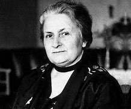

maria montessori
Aunque Maria Montessori no formó parte directamente de la corriente constructivista
(como sí lo hicieron Jean Piaget o Lev Vygotsky), su enfoque educativo comparte muchos
principios con esta teoría del aprendizaje. Por eso, se la considera una precursora del constructivismo.
Montessori y el Constructivismo: ¿En qué se parecen?
- 1. Aprendizaje activo:
- Montessori decía: “La educación es un proceso natural que se desarrolla espontáneamente en el ser humano.”
- Los niños en el aula Montessori aprenden manipulando materiales, moviéndose libremente y tomando decisiones.
- Esto es clave en el constructivismo: el aprendizaje sucede cuando el niño está activo.
- 2.Ambiente preparado
:
- El aula Montessori está diseñada para que el niño explore de forma libre, pero con límites claros.
- En el constructivismo, se considera que un ambiente rico y estimulante es esencial para el aprendizaje.
- 3.Materiales sensoriales y concretos:
- Montessori diseñó materiales que permiten al niño experimentar conceptos abstractos a través de objetos concretos (por ejemplo, aprender matemáticas con bloques).
- Piaget también defendía el aprendizaje a través de lo sensorial y lo concreto, sobre todo en la infancia.
- 4.Autonomía del niño:
- En el método Montessori, el niño elige qué aprender y cuándo, lo que fomenta la autoeducación.
- El constructivismo también valora al estudiante como protagonista de su propio proceso de aprendizaje.
- 5. El maestro como guía
- En Montessori, el docente no “enseña”, sino que observa, orienta y apoya.
- Esta visión es idéntica a la del maestro constructivista: un facilitador más que un transmisor de información.
Conclusion
Maria Montessori no fue constructivista en el sentido académico, pero su método es profundamente constructivista en la práctica.
Sus ideas sobre la autonomía, el aprendizaje activo
y el rol del maestro influyeron y siguen influyendo en muchas teorías educativas modernas.
|  |
VER MAS